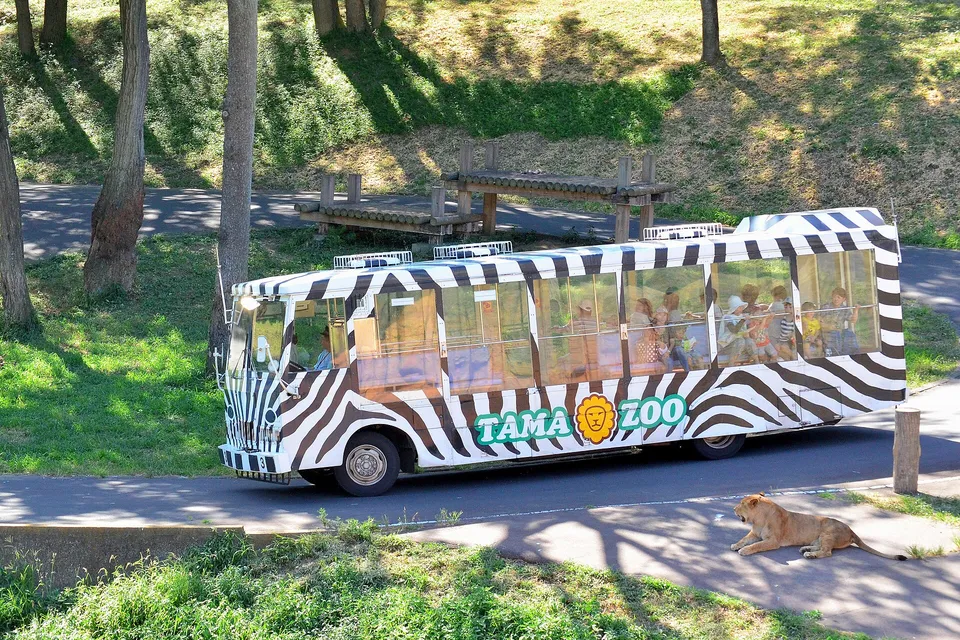
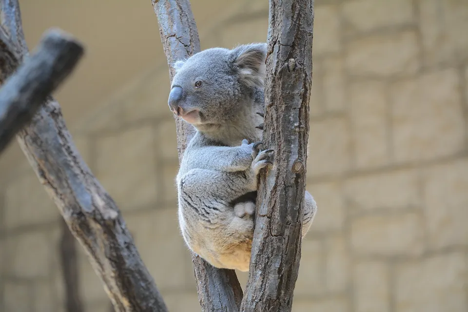
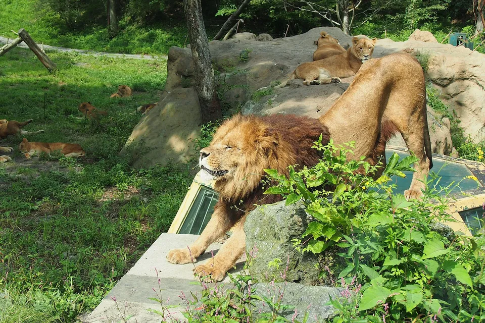
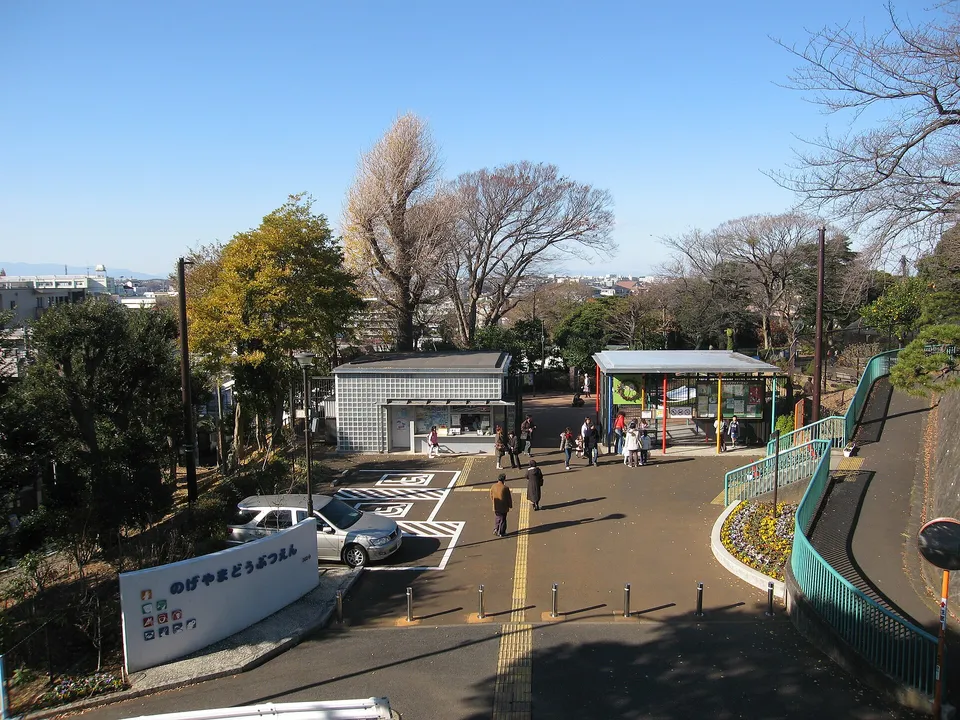
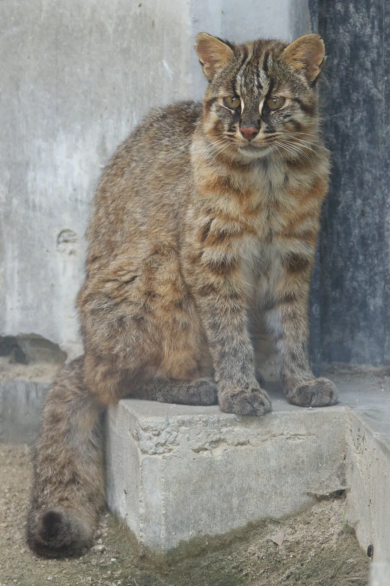
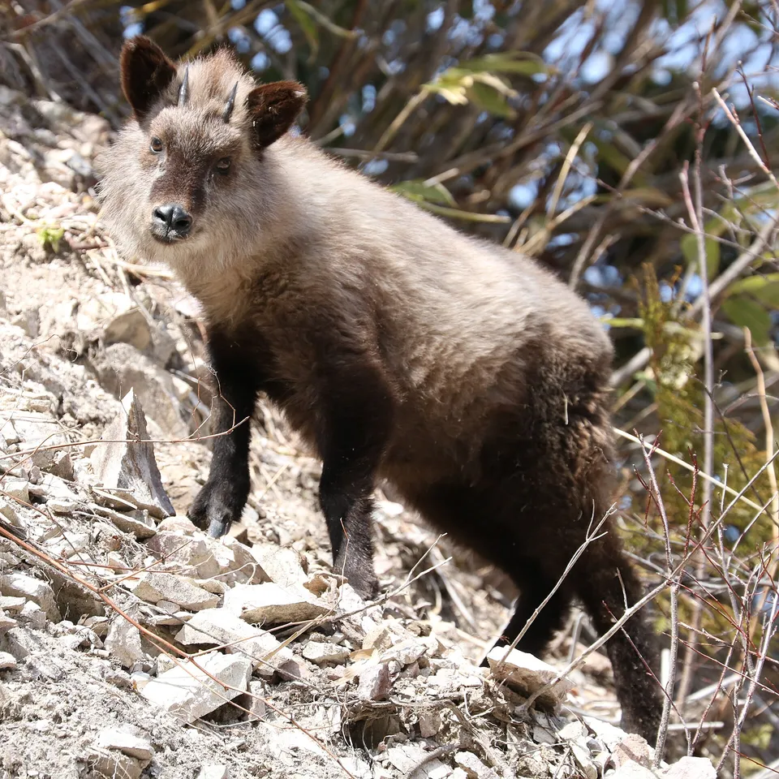

.jpg){kind=link}
Japan's zoos are cheap, plentiful and uneven — a ¥500 municipal zoo with a world-class primate house can share a prefecture with a concrete bear pit from 1965. This is every zoo in the JAZA roster, 91 of them, in one table, so you can tell which is which before you go.
Adult ticket, hours, closed days and what each one is for, read from the official sites; then which are free, where Japan's own species are, which safari parks are worth the drive, and an honest paragraph on welfare from a biologist.



Photos: The lion bus at Tama Zoological Park — Toshihiro Gamo via Wikimedia Commons, CC BY 2.0 · Koala at Higashiyama Zoo, Nagoya — C1815 via Wikimedia Commons, CC BY-SA 4.0 · Lions at Fuji Safari Park — しんのすけ さん https://photozou.jp/photo/show/1057511/168411950 (フォト蔵) via Wikimedia Commons, CC BY 2.1 jp
.jpg){kind=link}
{kind=link}
{kind=link}
How this list was built
The list is the zoo half of the JAZA member roster — the Japanese Association of Zoos and Aquariums, whose members sign up to shared welfare and husbandry standards. That gives 91 zoos and animal parks, from Ueno to a squirrel garden in Machida, and leaves out roadside animal attractions that are not members. We then read each zoo's own site for the adult ticket, hours and closed days. The aquarium half of the same roster is its own table.
Two honesty notes. Where a site could not be read by machine this month (16 of them — a couple were down or moved), the row says so and carries the last published price; the table is re-checked monthly. And the "why go" column is ours; the numbers are theirs.
Are Japanese zoos bad? An honest answer
Search "zoos in Japan" in English and one of the suggested queries is why are Japanese zoos so bad. It deserves a straight answer, and the person writing this page is a biologist who has worked with captive and wild animals, so here it is.
The reputation comes from the older municipal zoos: concrete and steel enclosures built in the 1950s–70s, small by modern standards, sometimes still in use. That criticism is fair where it applies. What it misses is how much has changed and how uneven the picture is. Asahiyama reinvented itself around behavioural exhibits and became the model the rest of the country copied; Zoorasia, Tama, Noichi, Toyama Family Park and the rebuilt Kyoto and Morioka are landscape zoos by any standard; and the JAZA membership that defines this list carries welfare and husbandry rules that non-member roadside "zoos" do not.
A practical rule: the newer the enclosure, the better it is likely to be, and the zoos that talk about their conservation breeding — Tsushima leopard cats, rock ptarmigan, crested ibis, giant salamanders — are the ones putting money where it matters. Where an old bear pit survives, it is usually because a city zoo is free or nearly free and cannot fund a rebuild; several in this table are exactly that.
The table: all 91, sortable by price
Click Adult ticket to sort by price (free ones first), filter by region, or type a name. Every zoo links to its official site — that is where today's calendar lives, and where the 16 entries we could not read by machine this month should be double-checked.
| Zoo | Adult ticket ▾ | Hours · closed | Why go |
|---|---|---|---|
| Asahiyama Zoo旭山動物園 · Hokkaido | ¥1,000 | 9:30–17:15 summer; 10:30–15:30 winter (varies)Closed: Seasonal closures in April and November; some winter days | Behaviour-based enclosures that made it famous — penguin walk in winter, polar bears, seals in the vertical tube |
| Kushiro Zoo釧路市動物園 · Hokkaido | ¥580 | 9:30–16:30 (Apr–Oct); 10:00–15:30 winterClosed: Wednesdays Dec–Feb; 29 Dec–2 Jan | Red-crowned cranes and Hokkaido species in the marshland zoo of eastern Hokkaido; under-15s free |
| Obihiro Zooおびひろ動物園 · Hokkaido | ¥420 | 9:00–16:30 (summer season)Closed: Winter season only weekends; closed Nov–Apr weekdays | Small Tokachi zoo in a park; winter opening on weekends only |
| Sapporo Maruyama Zoo円山動物園 · Hokkaido | ¥800not re-read this month — confirm on the official site | 9:30–16:30 (Mar–Oct); 10:00–16:00 winterClosed: 2nd & 4th Wednesdays; some others | Sapporo's city zoo on Maruyama hill — polar bears, Hokkaido wolves' successors, a big elephant house |
| Akita Omoriyama Zoo大森山動物園 · Akita | ¥1,000 | 9:00–16:30 (Mar–Nov); winter weekends onlyClosed: Winter weekdays | Akita's city zoo above the sea; high-schoolers and under free |
| Iwate Safari Park岩手サファリ · Iwate | ¥2,900 | 9:30–17:00 (last entry 16:00)Closed: Wednesdays; 2nd and 4th Thursdays | Drive-through safari in the Iwate hills |
| Morioka Zoological Park ZOOMO盛岡市動物公園 · Iwate | ¥1,000 | 9:30–16:30 (Apr–Oct); 10:00–16:00 winterClosed: Some weekdays (see calendar) | Rebuilt 2023 as ZOOMO — a wooded hillside park |
| Sendai Yagiyama Zoological Park八木山動物公園 · Miyagi | ¥480 | 9:00–16:45 (Mar–Oct); to 16:00 winterClosed: Mondays | Sendai's hilltop zoo on the subway line; African savanna zone |
| Yayoi Ikoi no Hiroba (Hirosaki)弥生いこいの広場 · Aomori | —not re-read this month — confirm on the official site | —Closed: — | Small animal park at Yayoi, Hirosaki |
| Adachi Park of Living Things足立区生物園 · Tokyo | ¥300 | 9:30–17:00 (to 16:30 Nov–Jan)Closed: Mondays | Insect and small-animal park with a butterfly greenhouse |
| Chiba Zoological Park千葉市動物公園 · Chiba | ¥800 | 9:30–16:30Closed: Wednesdays | The zoo where Fūta the standing red panda lived; big cheetah run |
| Edogawa Natural Zoo江戸川区自然動物園 · Tokyo | Free | 10:00–16:30Closed: Mondays | Free zoo in Gyosen Park, eastern Tokyo — red pandas, penguins, otters |
| Gunma Safari Park群馬サファリ · Gunma | ¥2,800adult incl. bus; entry-only 1,800 | 9:30–16:00Closed: Wednesdays | Drive-through safari (¥2,800 with the safari bus) |
| Hamura Zoo羽村市動物公園 · Tokyo | ¥1,500adult 1,500 per fee page (raised); confirm | 9:00–16:30Closed: Mondays; 1 Jan | Small city zoo in western Tokyo |
| Hitachi Kamine Zooかみね動物園 · Ibaraki | ¥520 | 9:00–17:00 (to 16:15 in winter)Closed: See calendar (changed April 2025) | Hitachi's coastal city zoo with a view of the Pacific |
| Ichihara Elephant Kingdom市原ぞうの国 · Chiba | ¥2,500not re-read this month — confirm on the official site | 9:30–16:30Closed: Some weekdays | Elephant park in Chiba — elephant shows and rides; the sanctuary debate is real |
| Ichikawa Zoo市川市動植物園 · Chiba | —not re-read this month — confirm on the official site | —Closed: — | Ichikawa's city zoo and botanical garden |
| Inokashira Park Zoo井の頭自然文化園 · Tokyo | ¥400 | 9:30–17:00Closed: Mondays | Small zoo in Inokashira Park with Japanese squirrels and a river aquarium annex |
| Kiryugaoka Zoo桐生が岡動物園 · Gunma | Free | 9:00–16:30Closed: Open all year | Free city zoo in a hillside park with a small amusement area |
| Machida Squirrel Garden町田リス園 · Tokyo | ¥500 | 10:00–16:00Closed: Tuesdays | A squirrel garden — hundreds of Formosan squirrels loose in a walk-through enclosure |
| Nasu Animal Kingdom那須どうぶつ王国 · Tochigi | ¥3,900 | 9:00–17:00 (varies)Closed: Some weekdays in winter | Show-and-touch park in the Nasu highlands; famous for its birds-of-prey and cat shows |
| Nasu Safari Park那須サファリ · Tochigi | ¥3,200 | 9:00–17:00Closed: Some weekdays | Drive-through safari; night safari in summer |
| Nogeyama Zoo野毛山動物園 · Kanagawa | Free | 9:30–16:30Closed: Mondays | Yokohama's free city zoo above the harbour — a proper zoo, no ticket |
| Omiya Park Zoo大宮公園小動物園 · Saitama | Free | 10:00–16:00Closed: Mondays | Free small zoo inside Omiya Park |
| Osaki Park Children's Zoo大崎公園子供動物園 · Saitama | Free | 10:00–16:00Closed: Mondays | Free children's zoo in Osaki Park, Saitama |
| Oshima Park Zoo (Izu Oshima)大島公園動物園 · Tokyo | Free | 8:30–17:00Closed: Open all year | Free zoo in Oshima Park on Izu Ōshima, with a large walk-through flight cage |
| Saitama Children's Zoo埼玉県こども動物自然公園 · Saitama | ¥700adult 700 per prefectural park site | 9:30–17:00 (to 16:30 winter)Closed: Mondays | Saitama's big children's zoo — koalas, quokkas, capybaras |
| Sayama Chikozan Zoo狭山市立智光山公園こども動物園 · Saitama | ¥200adult 200 per park site | 9:30–16:30Closed: Mondays | Small children's zoo in Chikozan Park, Sayama |
| Tama Zoological Park多摩動物公園 · Tokyo | ¥600 | 9:30–17:00Closed: Wednesdays | The big one in western Tokyo — lion bus, insect garden, Asian and Australian zones on a hillside |
| Tobu Zoo東武動物公園 · Saitama | ¥2,300 | 9:30–17:00 (to 18:00 in summer)Closed: See calendar | Zoo plus theme park east of Tokyo; white tigers |
| Ueno Zoo上野動物園 · Tokyo | ¥600 | 9:30–17:00Closed: Mondays | Japan's oldest zoo, in Ueno Park — Gorilla Woods, the Vivarium, and the panda house whose last pair went back to China in 2026 |
| Utsunomiya Zoo宇都宮動物園 · Tochigi | ¥1,600 | 9:00–17:00Closed: Open all year | Small private zoo with a funfair and pool attached |
| Yokohama Kanazawa Zoo横浜市立金沢動物園 · Kanagawa | ¥500 | 9:30–16:30Closed: Mondays; 29 Dec–1 Jan | Yokohama's hilltop herbivore zoo — okapi, tapirs, elephants |
| Yuki Park Zoo (Kofu)遊亀公園附属動物園 · Yamanashi | ¥320 | 9:00–16:30Closed: Mondays | Kōfu's small park zoo (rebuilding in phases) |
| Yumemigasaki Zoo夢見ヶ崎動物公園 · Kanagawa | Free | 9:00–16:00Closed: Open all year | Free zoo on a hill in Kawasaki |
| Zoorasia (Yokohama Zoological Gardens)よこはま動物園ズーラシア · Kanagawa | ¥800 | 9:30–16:30Closed: Tuesdays; 29 Dec–1 Jan | Yokohama's largest zoo, arranged by climate zone; okapis and the African savanna |
| Ishikawa Zooいしかわ動物園 · Ishikawa | ¥900not re-read this month — confirm on the official site | 9:00–17:00 (to 16:30 winter)Closed: Tuesdays in winter | Ishikawa's modern zoo — Japanese crested ibis (toki) on public view |
| Sabae Nishiyama Zoo鯖江市西山動物園 · Fukui | Free | 9:00–16:30Closed: Mondays | Free zoo famous for red pandas, in Sabae |
| Takaoka Kojo Park Zoo高岡古城公園動物園 · Toyama | Free | 9:00–16:30Closed: Open all year | Free zoo inside Takaoka Kojō Park |
| Toyama Municipal Family Park富山市ファミリーパーク · Toyama | ¥500 | 9:00–16:30 (Mar–Nov); 10:00–15:30 winterClosed: Mondays in winter | Toyama's forest park zoo — Japanese serow, rock ptarmigan breeding, satoyama exhibits |
| Atagawa Banana-Wani Park熱川バナナワニ園 · Shizuoka | ¥2,000not re-read this month — confirm on the official site | 9:00–17:00Closed: Open all year | Crocodiles and alligators in greenhouses heated by hot spring, plus manatees |
| Chausuyama Zoo長野市茶臼山動物園 · Nagano | ¥600 | 9:30–16:30Closed: Mondays in winter | Nagano's hillside zoo — red pandas, orangutans, and a view of the Alps |
| Fuji Safari Park富士サファリパーク · Shizuoka | ¥3,200not re-read this month — confirm on the official site | 9:00–16:30 (varies)Closed: Open all year | Japan's biggest drive-through safari, under Mt Fuji |
| Hamamatsu Zoo浜松市動物園 · Shizuoka | ¥500 | 9:00–16:30Closed: 29–31 Dec | Hamamatsu's forest zoo; golden lion tamarins |
| Higashiyama Zoo & Botanical Gardens東山動植物園 · Aichi | ¥500 | 9:00–16:50Closed: Mondays; 29 Dec–1 Jan | Nagoya's huge zoo-and-botanical-garden — koalas, gorillas, and one of the largest collections in Japan |
| Iida City Zoo飯田市立動物園 · Nagano | Free | 9:00–16:30Closed: Mondays | Free city zoo in Iida |
| Izu Animal Kingdom伊豆アニマルキングダム · Shizuoka | ¥2,700 | 9:30–17:00 (varies)Closed: Some weekdays | Walk-through savanna and white tigers on the Izu coast |
| Izu Shaboten Zoo伊豆シャボテン動物公園 · Shizuoka | ¥2,800adult 2,800 weekdays / 3,000 weekends & holidays | 9:30–17:00 (varies)Closed: Thursdays | Cactus greenhouses and the capybara hot-spring bath that started the trend |
| Japan Monkey Centre日本モンキーセンター · Aichi | ¥1,200closed for renovation | 10:00–17:00Closed: Closed for a long renewal from 11 July 2026 | The Japan Monkey Centre — the world's largest primate collection; closed for rebuilding from July 2026 |
| Komoro Zoo小諸市動物園 · Nagano | ¥500 | 9:00–16:30Closed: Wednesdays Dec–mid Mar | One of Japan's oldest zoos, inside Kaikoen castle park |
| Okazaki Higashi Park Zoo岡崎市東公園動物園 · Aichi | Free | 9:00–16:30Closed: Mondays | Free zoo in Okazaki Higashi Park — elephants and giraffes, no ticket |
| Omachi Alpine Museum大町山岳博物館 · Nagano | ¥450adult 450 (museum) | 9:00–17:00Closed: Mondays (open daily Jul–Aug) | Alpine museum whose garden keeps rock ptarmigan and Japanese serow |
| Rakujuen (Mishima)楽寿園 · Shizuoka | ¥300 | 9:00–17:00 (to 16:30 winter)Closed: Mondays | Mishima's spring-water garden park with a small zoo |
| Shizuoka Nihondaira Zoo日本平動物園 · Shizuoka | ¥620 | 9:00–16:30Closed: Mondays | Shizuoka's city zoo with a big-cat 'Mōjū-kan' house and a view of Fuji |
| Suzaka Zoo須坂市動物園 · Nagano | ¥400 | 9:00–16:45Closed: Mondays | Small city zoo in a park |
| Toyohashi Zoo & Botanical Park (Non Hoi Park)豊橋総合動植物公園 · Aichi | ¥600 | 9:00–16:30Closed: Mondays | Zoo, botanical garden and museum in one park (Non Hoi Park) |
| Toyota Kuragaike Park Zoo豊田市鞍ケ池公園 · Aichi | Free | 10:00–16:30Closed: Mondays | Free small zoo in Kuragaike Park, Toyota |
| Adventure Worldアドベンチャーワールド · Wakayama | ¥5,300 | 10:00–17:00 (varies)Closed: Some weekdays | Zoo, aquarium and theme park in Shirahama; the pandas returned to China in 2025 |
| Awaji Farm Park England Hill淡路ファームパーク イングランドの丘 · Hyogo | ¥1,200not re-read this month — confirm on the official site | 9:30–17:00Closed: Tuesdays | Farm park on Awaji with koalas |
| Gokatsura-ike Animal Parkごかつら池どうぶつパーク · Mie | ¥900 | 9:00–17:00Closed: Open all year | Farm-style animal park in Mie |
| Himeji Central Park姫路セントラルパーク · Hyogo | ¥4,400not re-read this month — confirm on the official site | 10:00–17:00 (varies)Closed: Some weekdays | Drive-through safari and theme park outside Himeji |
| Himeji City Zoo姫路市立動物園 · Hyogo | ¥250 | 9:00–17:00Closed: 29 Dec–1 Jan | The little zoo inside Himeji Castle's outer bailey — ¥250 |
| Kobe Animal Kingdom神戸どうぶつ王国 · Hyogo | ¥2,400 | 10:00–17:00Closed: Thursdays | Indoor-outdoor animal park on Port Island — birds, cats, capybaras at close range |
| Kobe Oji Zoo神戸市立王子動物園 · Hyogo | ¥600not re-read this month — confirm on the official site | 9:00–17:00 (to 16:30 winter)Closed: Wednesdays | Kobe's zoo — koalas, and Kobe's largest cherry-blossom crowd; its giant panda Tan Tan died in 2024 |
| Kyoto City Zoo京都市動物園 · Kyoto | ¥750not re-read this month — confirm on the official site | 9:00–17:00 (to 16:30 Dec–Feb)Closed: Mondays | Japan's second-oldest zoo, in Okazaki near Heian Shrine; rebuilt 2015 |
| Satsukiyama Zoo五月山動物園 · Osaka | Free | 9:15–16:45Closed: Tuesdays | Free hillside zoo in Ikeda with wombats |
| Tennoji Zoo天王寺動物園 · Osaka | ¥800 | 9:30–17:00 (last entry 16:00)Closed: Mondays | Osaka's city zoo, walkable from Shinsekai |
| Wakayama Castle Park Zoo和歌山城公園動物園 · Wakayama | ¥410 | 9:00–17:00Closed: Tuesdays | Small zoo inside Wakayama Castle park (paid since 2024) |
| Akiyoshidai Safari Land秋吉台自然動物公園サファリランド · Yamaguchi | ¥2,600 | 9:30–16:45Closed: Open all year | Drive-through safari on the Akiyoshidai plateau (¥3,700 with the safari bus) |
| Fukuyama Zoo福山市立動物園 · Hiroshima | ¥520not re-read this month — confirm on the official site | 9:00–16:30Closed: Tuesdays | Fukuyama's zoo — the Bornean elephant |
| Hiroshima Asa Zoological Park安佐動物公園 · Hiroshima | ¥510not re-read this month — confirm on the official site | 9:00–16:30Closed: Thursdays | Hiroshima's big city zoo in the hills — Japanese giant salamander breeding, black rhinos |
| Ikeda Zoo (Okayama)池田動物園 · Okayama | ¥1,300not re-read this month — confirm on the official site | 9:00–17:00Closed: Open all year | Okayama's private hillside zoo |
| Shunan Tokuyama Zoo周南市徳山動物園 · Yamaguchi | ¥600not re-read this month — confirm on the official site | 9:00–17:00Closed: Tuesdays | Shunan's city zoo, rebuilt in phases |
| Tokiwa Zoo (Ube)ときわ動物園 · Yamaguchi | ¥500not re-read this month — confirm on the official site | 9:30–17:00Closed: Tuesdays | Ube's zoo built around primates and their habitats |
| Kochi Animal Land (Wanpark)高知アニマルランド（わんぱーくこうち） · Kochi | Free | 9:00–17:00Closed: Wednesdays | Free zoo in Wanpark Kōchi |
| Kochi Noichi Zoological Park高知県立のいち動物公園 · Kochi | ¥470 | 9:30–17:00Closed: Mondays; 29 Dec–1 Jan | Kōchi's award-winning landscaped zoo; under-18s free |
| Tobe Zoo (Ehime)愛媛県立とべ動物園 · Ehime | ¥600 | 9:00–17:00Closed: Mondays | Ehime's big prefectural zoo — the polar bear Peace was born here |
| Tokushima Zooとくしま動物園 · Tokushima | ¥600 | 9:30–16:30Closed: Mondays | Tokushima's zoo — under-15s free |
| Fukuoka City Zoo福岡市動物園 · Fukuoka | ¥600 | 9:00–17:00Closed: Mondays | Fukuoka's city zoo, walkable from Yakuin — Tsushima leopard cat breeding centre |
| Itozu no Mori Zoological Park到津の森公園 · Fukuoka | ¥800 | 9:00–17:00Closed: Tuesdays | Kitakyushu's zoo in a wooded park |
| Kagoshima Hirakawa Zoological Park平川動物公園 · Kagoshima | ¥1,000non-resident price | 9:00–17:00Closed: 29 Dec–1 Jan | Kagoshima's zoo with a Sakurajima view; koalas |
| Kujukushima Zoo & Botanical Garden (Morikirara)九十九島動植物園 森きらら · Nagasaki | ¥830 | 9:00–17:00Closed: Open all year | Sasebo's zoo and botanical garden with a penguin house |
| Kumamoto City Zoo & Botanical Gardens熊本市動植物園 · Kumamoto | ¥500 | 9:00–17:00Closed: Mondays | Kumamoto's zoo and botanical garden by Lake Ezu |
| Kurume Bird Center久留米市鳥類センター · Fukuoka | ¥350 | 9:00–17:00Closed: 1st Wednesday of the month | Bird collection in Kurume's Central Park |
| Kyushu Natural Animal Park African Safari九州自然動物公園アフリカンサファリ · Oita | ¥2,600 | 8:50–16:00Closed: Open all year | Drive-through safari in Oita's hills; jungle bus feeding |
| Miyazaki City Phoenix Zoo宮崎市フェニックス自然動物園 · Miyazaki | ¥840 | 9:00–17:00Closed: Wednesdays | Miyazaki's zoo in a coastal pine forest |
| Nagasaki Bio Park長崎バイオパーク · Nagasaki | ¥1,890 | 10:00–17:00Closed: Open all year | Walk-among-the-animals park — capybaras, hippos you can feed |
| Omuta City Zoo大牟田市動物園 · Fukuoka | ¥500 | 9:30–17:00 (to 16:30 Dec–Feb)Closed: 2nd & 4th Mondays | Small zoo known for husbandry training done in the open |
| Uminonakamichi Animal Forest海の中道 動物の森 · Fukuoka | ¥450 | 9:30–17:30 (varies)Closed: See park calendar | Small animal forest inside Uminonakamichi Seaside Park (park entry) |
| Neo Park Okinawaネオパークオキナワ · Okinawa | ¥1,800 | 9:30–17:30Closed: Open all year | Free-flight bird park in Nago |
| Okinawa Zoo & Museum (Okinawa Kodomo no Kuni)沖縄こどもの国 · Okinawa | ¥1,000 | 9:30–17:30Closed: Some Wednesdays and Thursdays | Okinawa's zoo — Ryukyu species, Amami rabbits, native reptiles |
91 JAZA member zoos and animal parks. Adult walk-up price from each official site, read 2026-08-19; safari parks are shown with the drive-through fee where that is the normal ticket. Hours are the regular pattern — nearly every zoo shortens hours in winter and closes one weekday; the calendar on the official site is the only reliable answer for a given date.
Which one, for what
The questions people actually type, answered from the table.
The big three city zoos
Higashiyama (Nagoya, ¥500) has the biggest collection and koalas; Tama (Tokyo, ¥600) is a hillside park with the lion bus and an insect garden; Ueno (¥600) is the historic one in the middle of the city. All three are cheap because they are municipal.

Free, and genuinely good
14 zoos in the table charge nothing. Nogeyama in Yokohama is a full zoo above the harbour; Edogawa, Yumemigasaki and Kiryugaoka are the free neighbourhood ones around Tokyo; Okazaki keeps elephants and giraffes with no ticket booth. Filter the table by "Free entry".
{kind=link}
Safari parks
Drive-through, in your own car or the park's bus: Fuji Safari under the mountain is the biggest, Gunma, Nasu, Himeji Central Park, Akiyoshidai, Kyushu African Safari and Iwate are the regional ones. Prices are ¥2,600–4,400 and include the loop.
For a whole day
Tama, Zoorasia, Higashiyama, Tobe, Noichi and Toyohashi are the ones with the space to lose a day in — hills, woods, and enclosures you walk between rather than past.
Where to see Japan's own animals
Most people go to a zoo to see elephants and giraffes. If you go to a Japanese zoo to see Japan's own animals — the ones you will not meet at home and are unlikely to meet in the wild — these are the ones to know.

Tsushima leopard cat
About a hundred survive on Tsushima. The breeding programme spreads them across Fukuoka City Zoo, Inokashira, Toyama Family Park, Kyoto and a few others; Fukuoka and Inokashira are the reliable places to see one.
{kind=link}

Japanese serow
The mountain "goat-antelope" of Honshu's forests, a national natural monument. Toyama Family Park, Omachi Alpine Museum, Tama and several Tōhoku zoos keep them; in the wild you need luck and a cold morning.
{kind=link}
Cold-climate natives
Kushiro Zoo keeps red-crowned cranes and Hokkaido species in the marsh country they come from; Asahiyama and Maruyama in Hokkaido, and Toyama, Ishikawa and Omachi in the Alps, keep rock ptarmigan and other high-altitude birds few zoos outside Japan hold.
- Crested ibis (toki) — extinct in the wild in Japan by 2003, re-established from Chinese birds; Ishikawa Zoo is the one place the public can see them outside Sado.
- Japanese giant salamander — Hiroshima Asa Zoo has bred them since the 1970s; also at Kyoto Aquarium (see our aquarium table).
- Iriomote cat — none in any zoo; the ~100 animals are all wild on Iriomote. Do not believe a sign that says otherwise.
- Ryukyu species — Okinawa Zoo & Museum for the Amami rabbit, Ryukyu boars and native reptiles.
The Japanese you'll actually use
Common questions
What is the best zoo in Japan?
For exhibits, Asahiyama in Hokkaido — the behaviour-based enclosures every other zoo copied. For scale and value, Higashiyama in Nagoya, Tama in Tokyo and Zoorasia in Yokohama. For Japan's own species, Toyama Family Park, Kushiro, Ishikawa and Fukuoka.
How much does a zoo cost in Japan?
Municipal zoos are cheap: the median adult ticket across the 75 paid JAZA zoos is ¥700, and 14 are free. Safari parks and animal theme parks are ¥2,600–5,300.
Are there free zoos in Japan?
Yes — 14 in the JAZA list, including Nogeyama (Yokohama), Edogawa and Yumemigasaki (Tokyo/Kawasaki), Kiryugaoka, Okazaki, Satsukiyama and Takaoka. Filter the table by "Free entry".
Why do people say Japanese zoos are bad?
Because some older municipal zoos still have small concrete enclosures from the 1950s–70s. It is fair where it applies and out of date as a generalisation: the JAZA members rebuilt around behaviour and landscape (Asahiyama, Zoorasia, Tama, Noichi, Kyoto, Morioka), and the ones that talk about conservation breeding are spending on it. Newer enclosure, better zoo, is a reliable rule.
Which zoo has pandas?
As of 2026, none of the JAZA zoos in this table keep giant pandas: Ueno's last pair returned to China in early 2026, Adventure World's in 2025, and Kobe's Tan Tan died in 2024. Check the official sites for any new loan.
Which Japanese zoos are closed?
The Japan Monkey Centre in Inuyama closed for a long renewal from 11 July 2026. Several small zoos (Obihiro, Omoriyama, Toyama) open only at weekends or shorter hours in winter — the table notes it, the calendar has the dates.
Read next
Sources: the JAZA member facility list (zoo section, read August 2026) and each zoo's official admission, hours and access pages, linked from the table. Prices are adult walk-up rates in yen; rows marked "not re-read this month" carry the last published price and are flagged for the next monthly check. Animal photos show the species, not necessarily an animal at the zoo named unless the caption says so. Photos are Creative Commons — credits under each image.